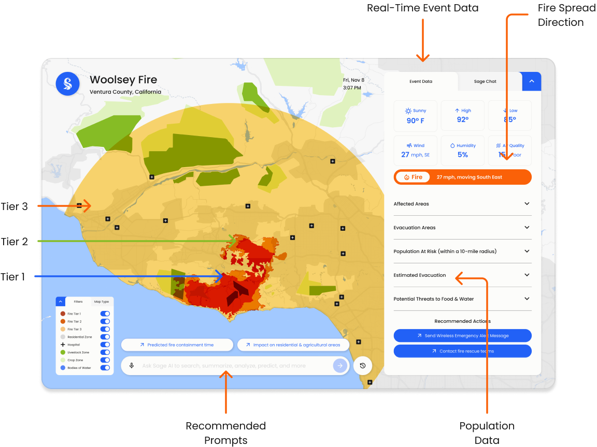
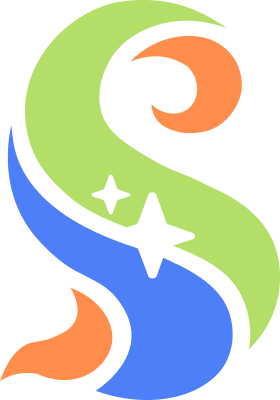

01
Deloitte
Product Design Internship
Deloitte US · AI + GIS · Internship
From climate data to decisive action.
During my Deloitte US internship, I helped design Sage, a decision platform for protecting food and water systems.
The final direction
Say hello to Sage.
One environment for situational awareness, AI-assisted action, inter-agency coordination, and institutional learning.


Deloitte internshipINTERNSHIP
WORK
WORK